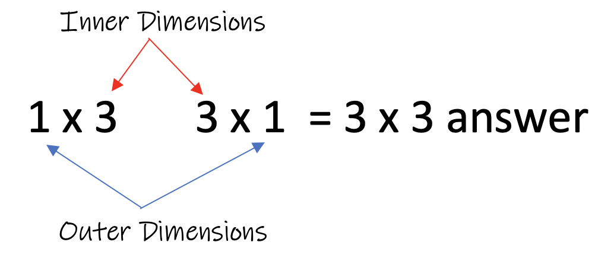

When you multiply a matrix by a integer it is called "scaler multiplication". The integer will be distributed to each entry in the matrix by multiplication. Multiplying each element in the matrix by the integer will produce the answer matrix. The dimensions of the matrix will remain the same before and after the multiplication.
Example 1: Multiply:
Example 2: Multiply:
Example 3: Multiply:
It is important to memorize that the original dimensions of the matrix are the same after the scalar multiplication.
Example 1 is a 1 x 3 matrix, example 2 is a 3 x 1 matrix, and example 3 is a 3 x 3 matrix.
The dimensions stay the same before and after the multiplication.
When multiplying two matrices together, the rule above does not apply. Matrix multiplication is different than multiplying a matrix using scalar multiplication.
Example 1: Multiply the matrices:
Example 2: Multiply the matrices:
Rule
In order to multiply two matrices, the inner dimensions of the two matrices MUST be the same. The answer matrix will have the dimensions of the outer dimensions as its final dimension.
Example: A 1x3 matrix multiplied by a 3x1 matrix will result in a 1x1 matrix as the answer.
Example: A 2x5 matrix multiplied by a 5x3 matrix will result in a 2x3 matrix as the answer.
Example: A 3x6 matrix multiplied by a 6x1 matrix will result in a 3x1 matrix as the answer.
Example: A 2x3 matrix multiplied by a 3x5 matrix will result in a 2x5 matrix as the answer.
Example: A 3x4 matrix multiplied by a 5x2 matrix will result in an error. There is no solution to this problem.
Rule:
In order to multiply two matrices together, their inner dimension MUST be the same. In this example, the inner dimensions are 4 and 5. They are not the same number. Therefore there is no work to be done. The answer is "no solution". It is important that you memorize this rule.
Rule for Multiplying Matrices
If matrix A has dimensions axb and matrix B has dimensions of bxc, then their product will have dimensions of axc.
To multiply two matrices, the sum of the corresponding entry's products must be calculated. A general formula can help you keep the answer correct.
It does not matter what numbers are in each matrix, the multiplication pattern remains the same for each problem.
Example: Multiply:
Example: Multiply:
Example: Multiply:
Example: Multiply:
